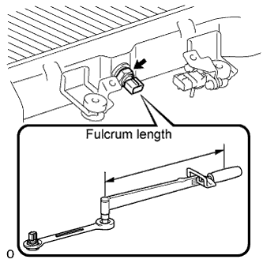

INTAKE AIR TEMPERATURE SENSOR > INSTALLATION |
| 1. INSTALL INTAKE AIR TEMPERATURE SENSOR |
Install a new gasket to the sensor.
 |
Using a ball joint lock nut wrench, install the sensor.
| 2. INSTALL INTERCOOLER ASSEMBLY |
Install the intercooler assembly (Click here).